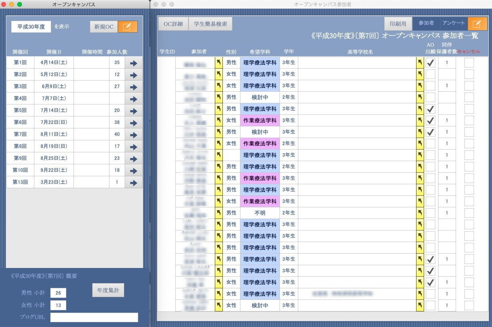
理学療法士国家試験
全員合格を目指すために。
学習を強力にサポートするシステム
「問題整理」「試験作成・出題」「解答分析」 の3つの柱で
国家試験対策をデジタルで効率的に、そして徹底的に実現します。
合格を支える3つの柱
過去問のデータ化から試験作成、そしてパーソナライズされた解答分析まで、教員の負担を減らし学生の学力を最大化します。
問題整理
科目×分野×キーワードでピンポイント検索＆新規問題登録
膨大な過去問データを一元管理し、あなたの学習を強力にサポート。大量の過去問を整理された分野名で分類し、科目やキーワードで素早く検索できる環境を提供します。新規問題のインポートにも対応し、最新の試験傾向に合わせた問題集作りも可能です。
- 大量の過去問を保存し、他専門職の問題にも応用可能
- 学科・科目、大・中・小項目まで自由自在に分類・一括変換
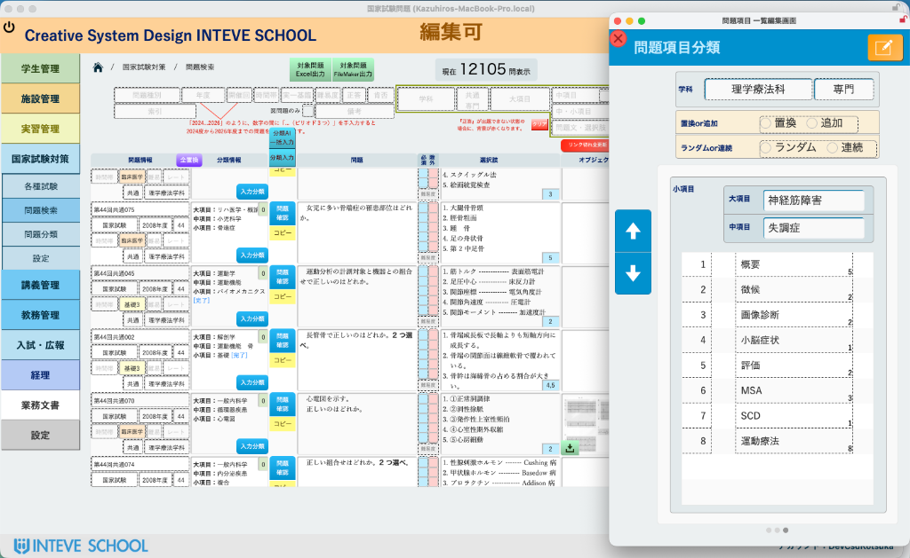
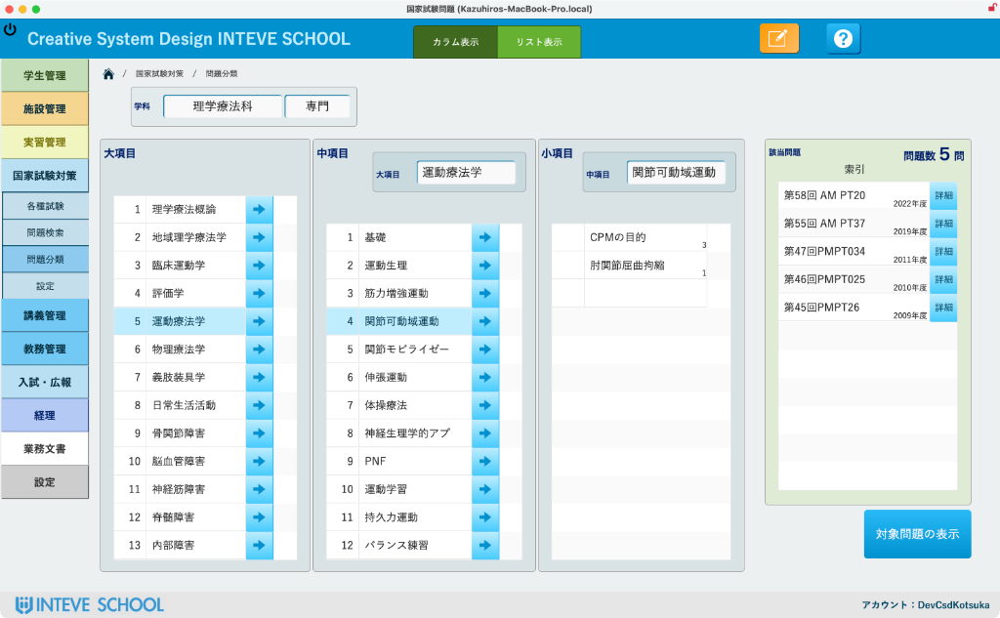
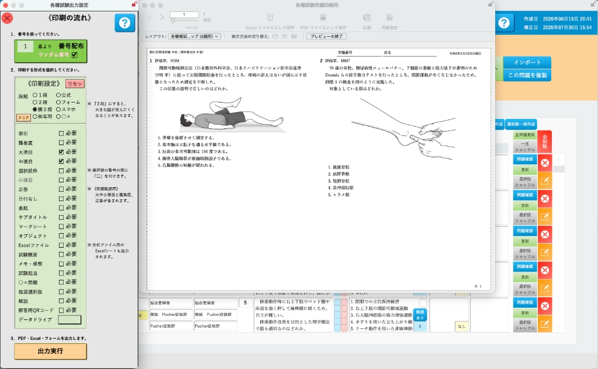
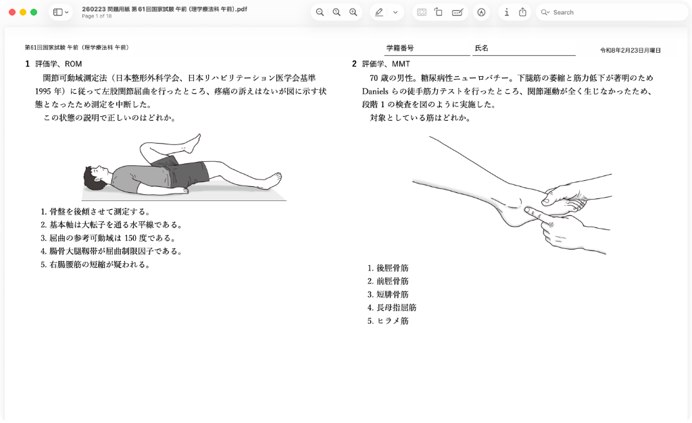
試験作成・出題
自在に試験作成！過去問活用で効率UP
検索して絞り込んだ問題を、レイアウトや図も含めて最適化して出力。分野指定検索から問題用紙出力まで、試験作成のあらゆるニーズに応え、教員の負担を大幅に削減します。
分野指定検索
科目や分野を絞り込み、必要な過去問をピンポイントに抽出。
自由なレイアウト
縦置き、横段など用途に合わせて問題用紙のレイアウトを自由に設定。
図のサイズ微調整
問題用紙に配置する図のサイズを細かく調整可能。
項目指定
出題範囲を大・中項目で細かく指定し、弱点克服のテストを作成。
解答分析
解答分析を深化！エラー分析で課題提示
オンライン回答やOCR処理された解答をデータ化し、分野別正解率や偏差値などの詳細な分析を可能にします。解答選択肢の一覧表示で個々の傾向を把握し、エラーを自動集計して克服シートを出力します。
- 解答データ分析の効率化 結果を手間なくデジタル化し、分析への時間を創出。全体の順位や偏差値を自動算出。
- 解答傾向の可視化 誰がどの選択肢を選んだのかが一目でわかり、理解度の低い選択肢を把握。
- エラー分析と課題提示 選択肢毎に優位性を設定し、誤答をエラーとして自動カウント。個別課題シートを出力。
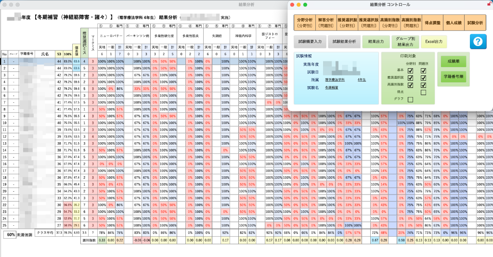
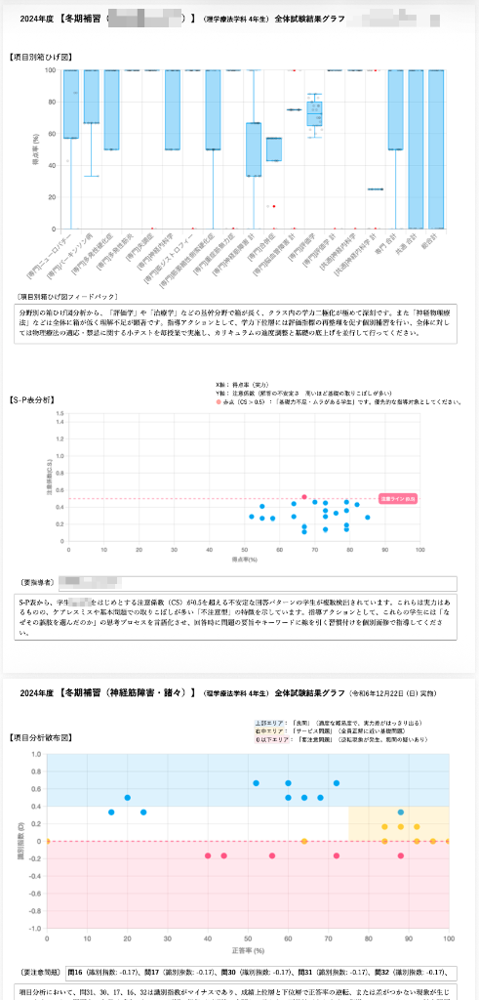
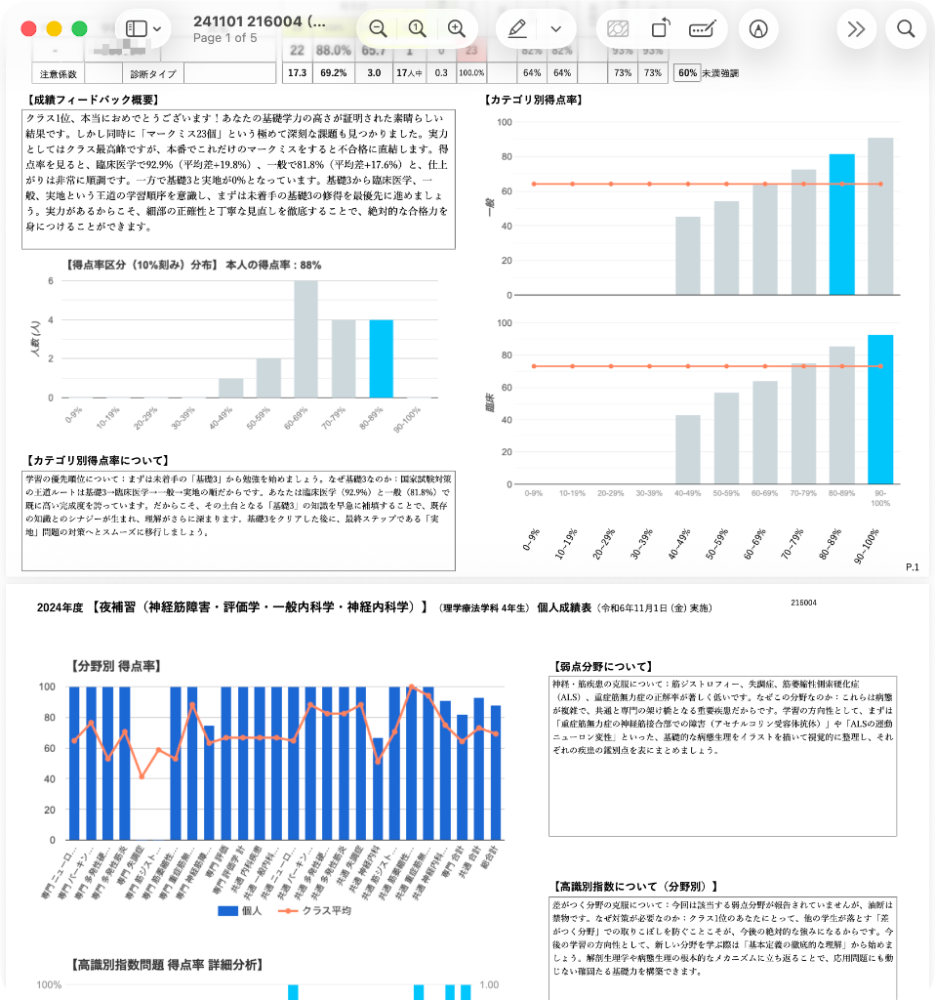
「点数」では届かない領域へ。
特許技術が解き明かす、学習の『質』と『リスク』。
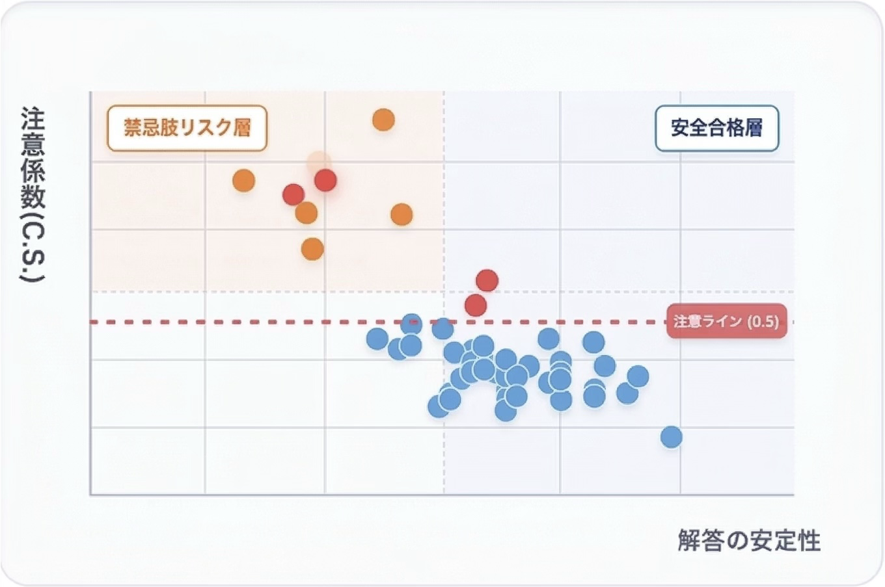
多次元分析マトリクス
成績上位でも「禁忌肢」を選ぶリスク層を特定。
「合格圏内」に隠れた死角をゼロに。S-P表分析と識別指数を用い、学生の知識の定着度と判断の安全性を可視化します。
LLMパーソナライズ・
アドバイス
「何をすべきか」をAIが具体化。
AIが「あなたの思考の癖」を言語化。膨大な統計データから、LLMが一人ひとりに最適化された具体的な復習アクションを提案。学生の自律的な「メタ認知」を促します。
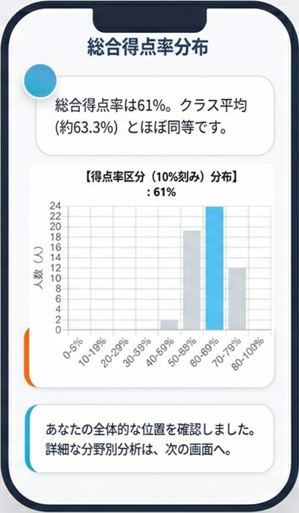
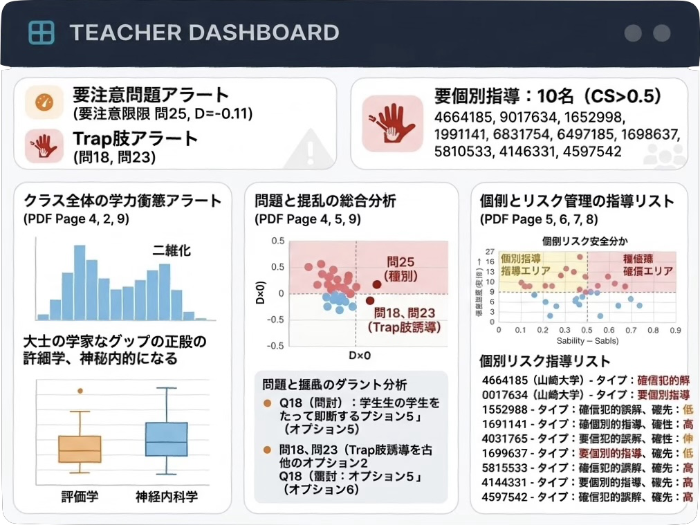
指導者向け
マネジメント・レポート
分析はAIに任せ、先生は「指導」に集中する。
採点と同時に、クラス全体の概念誤解や「悪問」の可能性を自動特定。指導が必要な学生を優先順位付きでリストアップし、次回の授業案までサポートします。
「合格」への最短距離を、あなただけのオーダーメイドで。
INTEVE SCHOOL® で実現する、真の個別最適化。
FileMakerで変わる教育現場のDX
このFileMakerデータベースアプリは、学習状況に合わせてカスタマイズ可能。「あなただけの」国家試験対策ツールとして、合格への道のりを力強くサポートします。国家試験対策、臨床実習、マーケティングに必要な情報を一元管理。
FileMakerの柔軟性を活かしたオリジナルアプリが、問題作成・分析の効率化、実習管理の円滑化、学生データの統合、高校情報連携による広報活動といった業務効率化を強力に支援します。